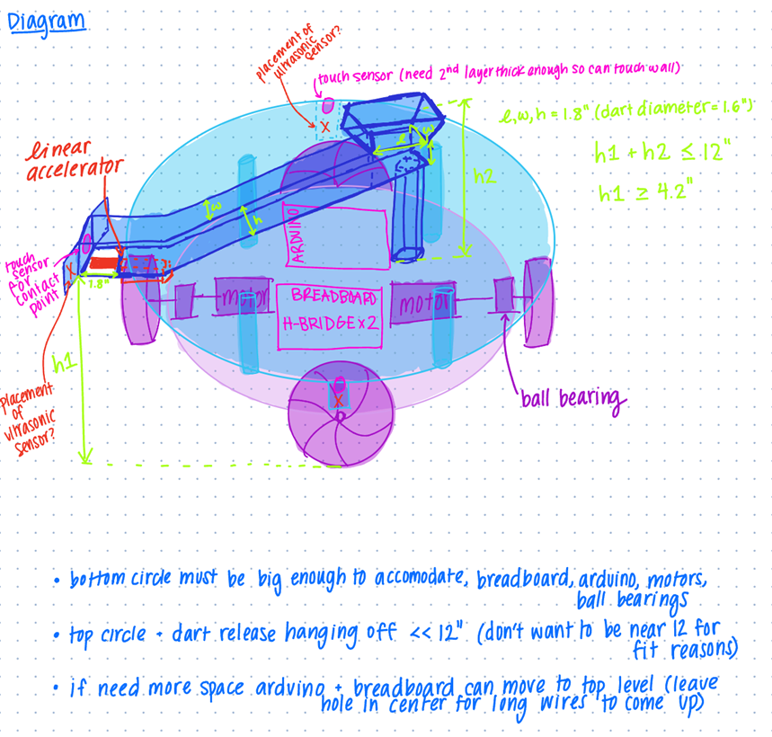
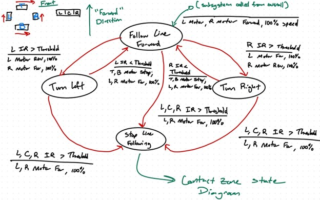
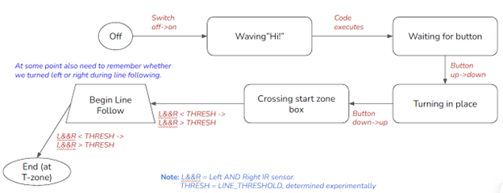
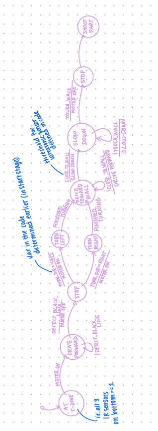
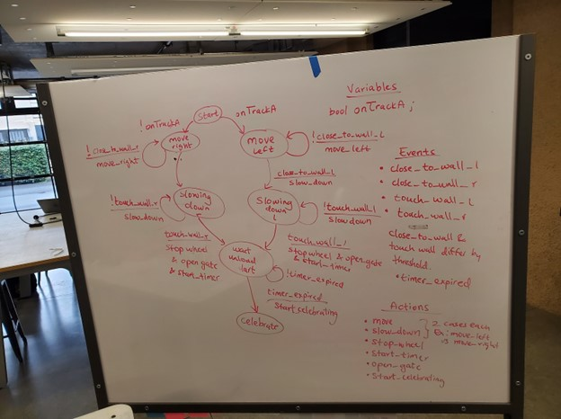
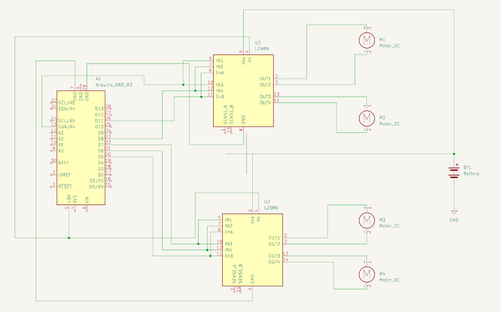
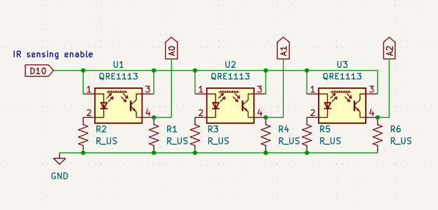
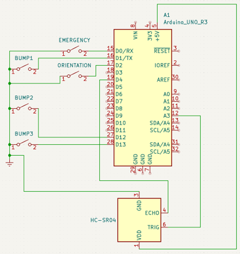
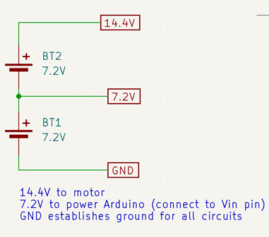
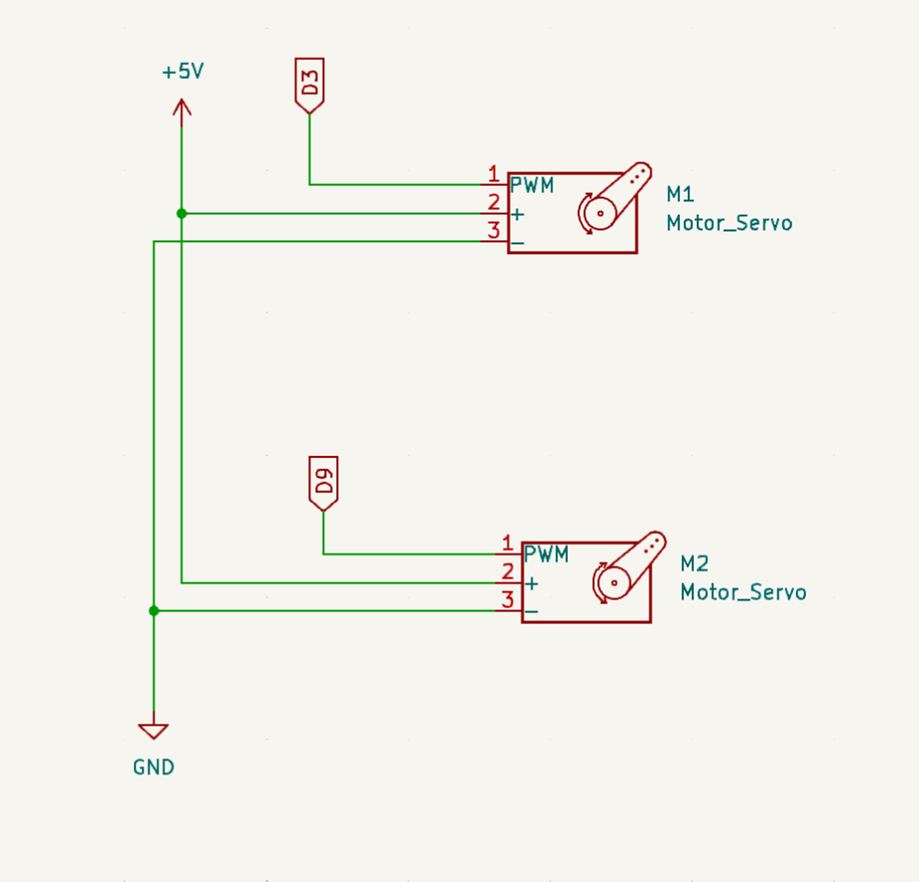

Product Nucleus and MVP
Inspired by a guest talk given by Steve Myers, our team began by determining and decomposing the necessary functionality of our robot. We identified features of our robot that are absolutely required (MVP), features that are exciting but should have less priority, and features that would only be implemented if we had too much time on our hands. Below is the summary of our task break down
Required Functions
- Driving and Turning
- Turning in Place
- Touching contact zone
- Line Following
- Orient in start zone
- Get out of the start place and follow tape line 1
- Find tape line 2 (drive forward)
- Turning to contact zone
- Sensing
- IR sensing the shooting goal
- Turning to contact zone (IR)
- Shooting
- Ball storage
- Required buttons
- Emergency stop switch
- Button during startup
- Orient in start zone
- Celebration
Nice to Have
- Confirming touch
- Line to Ramp
- Going up Ramp
Really Nice to Have
- Cable Management
- Aesthetic
Our plan of attack
Blow is a table detailing our breakdown of tackling the required features of our robot.
| Task | Features/how to do it | Equipment needed | How to test | Milestone Date / Assignments |
|---|---|---|---|---|
| Driving and Turning |
|
|
|
Dylan & Coco Ideal deadline: Feb 27 Hard deadline: Mar 1 |
| Turning Input Button |
|
|
Set robot in random direction, pick target direction, and robot can get to target direction | Dylan & Coco Deadline Mar 1 |
| Line Following |
|
|
|
Gene Ideal deadline: Feb 27 Hard deadline: Mar 1 |
| Touch Sensing | Robot gets close enough to shooting zone |
|
|
Liam Ideal deadline: Feb 27 Hard deadline: Mar 1 |
| IR Sensing |
|
IR signal sensor (from only one direction so if turn and signal get stronger have an idea of signal direction) |
|
Gene Ideal deadline: Feb 27 Hard deadline: Mar 1 |
| Shooting |
|
|
|
Liam Ideal deadline: Feb 27 Hard deadline: Mar 1 |
| Emergency stop switch | Emergency stop switch that cuts all power |
|
In all states, emergency switch cuts power | Everyone Deadline March 1 |
| Celebration | Servo with pom poms attached moves back and forth |
|
|
Everyone Ideal deadline: Feb 27 Hard deadline: Mar 1 |
Initial Schematics and State Diagrams
Below are the initial state diagrams and design schematics of each of the sub-systems outlined by our required features brainstorm.
Overall Initial Diagram

Line Sensing

Exiting Start Box

Touching Contact Zone

Shooting

Motor diagram

IR Sensor diagram

Orienting/Starting buttons diagram

Battery diagram

Shooting gate diagram
